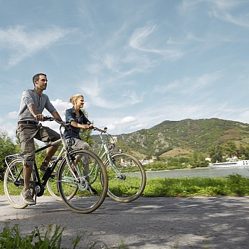
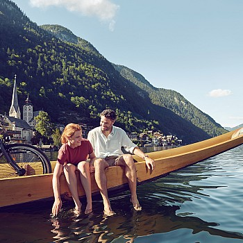
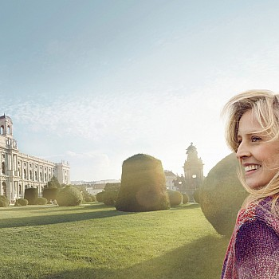
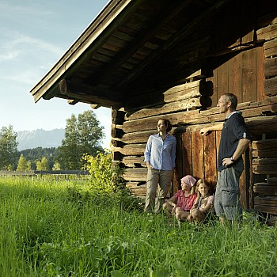

Walking breaks are soaring in popularity with British holidaymakers, enticed by the ease of Austria's unofficial national pastime. Well signposted trails web across valleys and mountain tops, with many routes offering lodge-to-lodge connections whereby you do it on foot while your luggage is moved by your hosts.
More than 400km of walking paths make the Wilder Kaiser mountain range an absolute gem for hiking holidays.
Tirol's wild emperorMore than 400km of walking paths make the Wilder Kaiser mountain range an absolute gem for hiking holidays.
Tirol's wild emperorAustria's hiking trails provide many opportunities to enjoy natural waters along the way, from rivers and lakes to gorges and waterfalls.
Waterside walksAustria's hiking trails provide many opportunities to enjoy natural waters along the way, from rivers and lakes to gorges and waterfalls.
Waterside walksAustria's hiking trails provide many opportunities to enjoy natural waters along the way, from rivers and lakes to gorges and waterfalls.
Waterside walksAustria's hiking trails provide many opportunities to enjoy natural waters along the way, from rivers and lakes to gorges and waterfalls.
Waterside walksWhether you explore one of the national parks, experience the beauty of the Alps on a long distance trail or head out on a family day hike, Austria offers unlimited opportunities.
Austria's hiking trails provide many opportunities to enjoy natural waters along the way, from rivers and lakes to gorges and waterfalls.
Waterside walksAustria's hiking trails provide many opportunities to enjoy natural waters along the way, from rivers and lakes to gorges and waterfalls.
Waterside walksAustria's hiking trails provide many opportunities to enjoy natural waters along the way, from rivers and lakes to gorges and waterfalls.
Waterside walksAustria's hiking trails provide many opportunities to enjoy natural waters along the way, from rivers and lakes to gorges and waterfalls.
Waterside walksAustria's hiking trails provide many opportunities to enjoy natural waters along the way, from rivers and lakes to gorges and waterfalls.
Waterside walksAustria's hiking trails provide many opportunities to enjoy natural waters along the way, from rivers and lakes to gorges and waterfalls.
Waterside walksGive us a call or chat with us here Monday to Friday from 8am to noon. Outside of our office hours please drop us an email and we'll be happy to answer your questions.
Our holiday experts are here to assist you with your holiday planning. Give us a call from 8am to noon or drop us an email and we'll be happy to answer your questions.
*toll-free; calls from mobile networks may incur charges
Subscribe to our free monthly e-newsletter and receive great information about Austria.
Newsletter